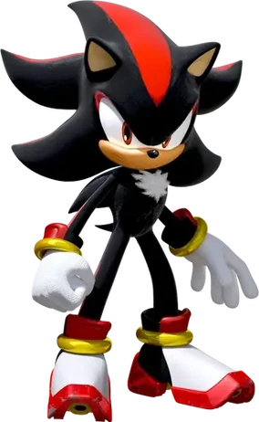

Sonic, es un erizo azul con una velocidad increible, capaz de correr mas rapido que el sonido, es el protagonista principal de la saga Sonic the Hedgehog de SEGA, Tiene una personalidad valiente, divertida, rebelde y despreocupada, aunque por otro lado, tambien es un gran sentido de la justicia, Sonic odia la injusticia y le desagrada que lo controlen o lo detengan, su comida favorita son los chili dogs, destaca sus frases tanto en ingles como en español “¡Gotta go fast!” en español, ¡Tengo que ir rápido!
Shadow es un erizo negro con rayas rojas, creado por el Profesor Gerald Robotnik como “el ser definitivo” su personalidad es seria, reservada y ademas es muy poderoso, capaz de usar el Chaos Control gracias a las Chaos Emeralds, su pasado doloroso se marca por la perdida de su amiga Maria Robotnik, lo que lo hace cuestionar su proposito, aunque a veces parece un antiheroe, en el fondo busca proteger al mundo a su manera, uno de los personajes más complejos y queridos de la saga.
Tails es un zorro de dos colas que puede volar girandolas como helices, un personaje muy inteligente y experto en la tecnologia, siendo el ingeniero principal del equipo de Sonic, a pesar de su juventud y timidez, ha demostrado ser valiente, confiable y leal a sus amigos, admira profundamente a Sonic y siempre lo acompaña en sus aventuras, ayudando con aviones, computadoras y todo tipo de inventos, es el corazon amable y sabio del grupo.
Knuckles es un equidna rojo y el ultimo de su especie, es el guardian de la Master Emerald, una gema poderosa que protege con gran responsabilidad, es el mas fuerte del equipo de Sonic, impulsivo y a veces algo ingenuo, pero con un gran sentido del deber, aunque suele trabajar solo, se une a Sonic cuando es necesario para proteger su isla o enfrentar amenazas mayores, sus puños son tan fuertes que puede destruir rocas y escalar muros.
Amy es una eriza rosa energetica, optimista y muy apasionada es la enamorada de Sonic desde que lo conocio y no tiene miedo de perseguirlo o defenderlo cuando es necesario, usa un enorme martillo llamado Piko Piko Hammer, con el que puede pelear con gran fuerza, aunque al principio se mostraba algo dependiente, ha evolucionado para ser mas independiente poco a poco, decidida y valiente, es una luchadora por la justicia y siempre quiere ayudar a sus amigos.